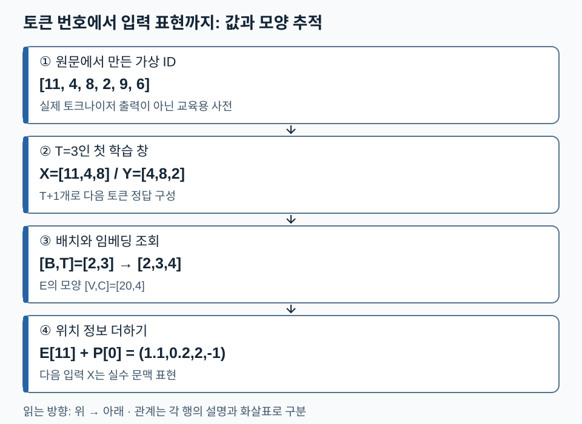
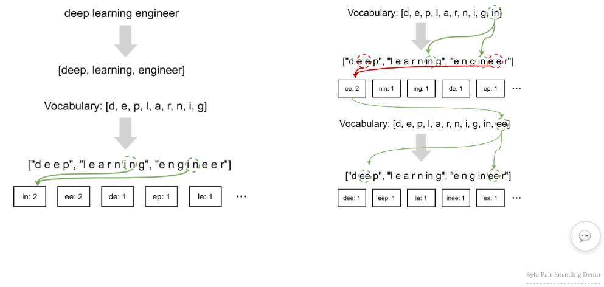
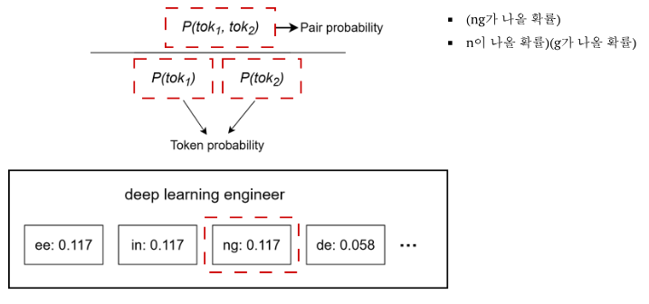
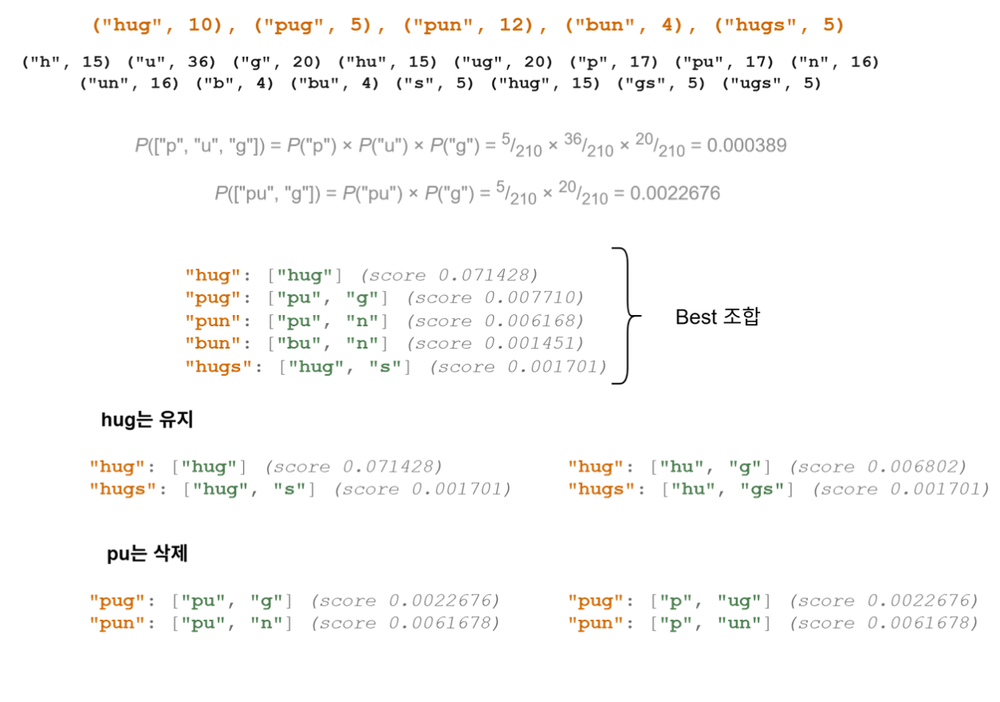
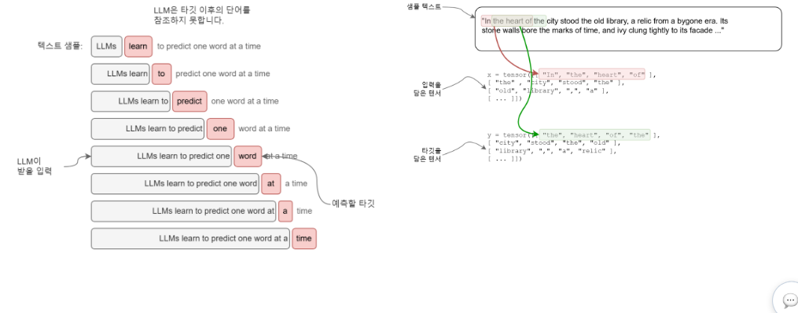
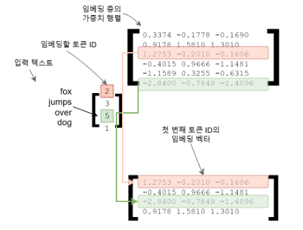

07. 언어 모델 입력 — 문자열이 학습 가능한 숫자가 되는 과정
문자열은 전처리→토큰화→ID→입력·정답 창→임베딩과 위치 정보를 거쳐 모델로 들어갑니다. 목표는 각 단계의 값과 모양을 추적하고, 토큰 ID·벡터·정답을 서로 구별하는 것입니다. 기본 학습은 1~4절을 따르고 위치 방식 비교는 다음 장에서 읽으세요. 행렬의 모양은 [행 수, 열 수]로 표기합니다.
1. 전처리와 토큰화는 서로 다른 일을 한다
79쪽의 파운데이션 모델은 넓은 데이터에서 기본 능력을 학습한 기반 모델이고, Chat 모델은 대화 지시와 응답 형식에 맞도록 추가 학습된 모델입니다. 입력을 숫자로 바꾸는 기본 경로는 공유하지만, 대화 템플릿·역할 토큰·정답 구간이 달라질 수 있습니다. 추가 학습은 이후 지시학습 단원에서 이어집니다.
전처리는 문서 정제·중복 처리·형식 통일 등 데이터 준비이고, 토큰화는 문자열을 모델이 다룰 조각(token)과 고유 ID로 바꾸는 규칙입니다. 토큰은 단어 전체일 수도, 단어 일부·공백·바이트 조각일 수도 있습니다. 81쪽의 ‘의미 단위’는 직관이며 의미 경계가 항상 보장되지는 않습니다.
토큰 ID는 어휘표의 번호입니다. ID 20이 ID 10보다 의미가 두 배 크거나 가깝다는 뜻은 없습니다. 동일 문자열이라도 토크나이저·버전·특수 토큰 설정이 다르면 ID와 길이가 달라집니다. 아래 ID는 전부 교육용 가상 사전의 값이며 실제 모델의 encode 결과가 아닙니다.
| 원문 85~88쪽 | 어휘를 만드는 관점 | 학습자가 구별할 것 |
|---|---|---|
| BPE | 자주 함께 등장하는 이웃 조각의 병합을 반복 | 병합 학습과 이미 학습된 병합 규칙 적용은 다름 |
| WordPiece | 교안에서는 쌍의 빈도와 각 조각 빈도의 비율로 설명 | 단순 빈도 병합과 점수 기준을 구별; 구현별 세부 학습법을 보편화하지 않음 |
| Unigram | 후보 조각과 확률 모델로 분절을 평가하고 어휘를 줄임 | 최선 분절 선택과 확률적 분절 샘플링은 별도 옵션 |
Unigram 토크나이저가 매번 무조건 다른 결과를 내는 것은 아닙니다. 확률적 분절은 subword regularization을 위해 선택할 수 있으며, 결정적 분절도 가능합니다. Kudo의 원 논문.
병합 예시로 단어 low가 3회, lower가 1회 나오는 작은 말뭉치를 봅시다. 초기 조각을 문자와 단어 경계로 두면 (l,o)와 (o,w)는 각각 4회입니다. 동률 처리 규칙으로 (l,o)를 먼저 고르면 lo w가 되고, 다음 병합에서 lo+w가 후보가 됩니다. 실제 byte-level BPE의 초기 조각·공백 처리·동률 규칙은 이 단순 예시와 다를 수 있습니다.
2. next-token 입력·정답은 한 토큰 어긋난다
가상 토큰열 [11,4,8,2,9,6], 문맥 길이 T=3, 창 이동폭 stride=2를 사용합니다. 다음 토큰을 정답으로 만들려면 창 하나당 원 토큰 T+1=4개가 필요합니다.
| 창 시작 | 입력 X | 정답 Y | 의미 |
|---|---|---|---|
| 0 | [11,4,8] |
[4,8,2] |
11 뒤 4, 11·4 뒤 8, 11·4·8 뒤 2 |
| 2 | [8,2,9] |
[2,9,6] |
8 뒤 2, 8·2 뒤 9, 8·2·9 뒤 6 |
여기서는 창 시작이 바뀌면 잘린 문맥으로 새 예측 사례를 만듭니다. X와 Y를 따로 섞으면 대응이 깨지므로 한 사례를 묶어서 shuffle해야 합니다. 두 창을 배치로 모으면 X·Y의 모양은 각각 [B,T]=[2,3]이고 값은 정수 ID입니다. stride를 1로 바꾸면 시작점은 0,1,2로 늘어나 세 창이 됩니다. 짧은 마지막 창을 버릴지 padding할지는 데이터 계약으로 정합니다.
교안 99쪽의 자기지도학습(Self-Supervised Learning)은 사람이 각 위치의 라벨을 따로 쓰지 않아도 원문에서 정답을 만든다는 뜻입니다. 학습 신호가 없다는 뜻은 아닙니다. 일부 라이브러리 모델은 내부에서 shift하므로, 그 경우 바깥에서 정답을 또 이동하면 안 됩니다.
3. 임베딩은 ID로 행을 조회하는 학습 가능한 표
어휘 크기 V=20, 벡터 폭 C=4인 임베딩 표 E의 모양은 [20,4]입니다. ID 11은 E[11]이라는 길이 4의 행을 선택합니다. X의 모양이 [2,3]이면 E[X]는 [2,3,4]입니다. 곱셈 대상인 실수 표현이 이 단계에서 생깁니다.
가상 행 E[11]=(1,0,2,-1)와 첫 위치 벡터 P[0]=(0.1,0.2,0,0)를 더하면 첫 입력 표현은 (1.1,0.2,2,-1)입니다. 같은 ID가 다른 위치에 오면 토큰 임베딩은 같아도 더해지는 위치 정보는 다를 수 있습니다.
82~84쪽의 단어 벡터 유사도와 유추는 특정 학습된 벡터 공간에서 나타나는 경향입니다. 벡터 산술이 언어 관계를 항상 정확히 풀거나 무작위 초기 임베딩이 의미를 담는다고 해석하지 않습니다. 뒤의 Attention을 통과하면 같은 토큰도 문맥에 따라 다른 표현을 갖게 됩니다.
아래에서는 원래 ID, 학습용 창, 임베딩 모양을 위에서 아래로 따라가세요. X는 표의 ②에서는 정수 입력, 본문의 Attention 입력에서는 임베딩 이후의 실수 표현을 뜻하므로 단계와 함께 읽습니다.

ID 11 자체가 벡터 (1.1,0.2,2,-1)인 것은 아닙니다. E의 11번 행을 조회하고 위치 벡터를 더한 결과가 이 벡터입니다. T와 C를 바꾸면 어느 축이 달라지는지 6절의 질문으로 확인하세요.
4. 특수 토큰과 padding: 값과 목적을 구별하기
BOS는 시작, EOS는 끝, PAD는 길이를 맞추기 위한 자리라는 용도로 쓰일 수 있습니다. 대화 역할·도구 호출 표시 등도 98쪽의 구조 제어 신호입니다. 정확한 이름과 ID는 모델마다 다릅니다. BOS나 EOS가 모든 데이터 형식에 반드시 자동 삽입되는 것도 아닙니다.
padding을 추가하면 두 질문이 생깁니다. Attention mask는 어떤 입력 위치를 참조할지 제어하고, loss mask는 어떤 정답 위치를 손실에 넣을지 제어합니다. 하나가 다른 하나를 자동으로 대신하지 않습니다. 실제 EOS는 ‘여기서 종료’를 학습시키는 정답이 될 수 있습니다. PAD와 EOS가 같은 ID라도 추가된 PAD 위치와 실제 EOS 위치를 길이·mask로 구분해야 합니다. prompt 구간의 loss 제외 등은 지시 미세튜닝에서 이어집니다.
5. 다음 단계인 위치 정보
같은 ID는 같은 행을 조회하므로 순서 정보를 별도로 넣어야 합니다. 위치 벡터의 덧셈과 Q·K의 회전은 위치 정보와 RoPE에서 비교합니다.
6. 확인 질문
- 위 토큰열에서
T=3,stride=1일 때 중간 창의 X와 Y를 쓰세요. V=20,C=4,B=2,T=3일 때 입력 ID·임베딩 표·임베딩 결과의 모양을 쓰세요.- PAD에 loss를 주지 않았으니 Attention mask도 필요 없다는 주장에 어떤 조건이 빠졌나요?
- ID 11을 두 번 조회하면 임베딩 표의 어느 행을 사용하는지 설명하세요.
해설과 돌아갈 위치
- 시작 1이므로 X=
[4,8,2], Y=[8,2,9]. 2절. [2,3],[20,4],[2,3,4]. 번호를 실수 벡터와 혼동했다면 3절.- PAD가 실제 토큰의 표현 계산에 참조되는지 별도 제어해야 합니다. 데이터 배치·padding 방향·mask 규약에 따라 판단합니다. 4절.
- 두 번 모두 11번 행입니다. 이후 위치 정보나 문맥 연산이 달라질 수 있습니다. 3절.
다음 연결: 이제 실수 입력 표현 X가 준비되었습니다. 다음 단원에서는 X에서 만든 Q·K·V를 이용해 문맥 정보를 섞습니다.
7. 세 토크나이저를 실제 숫자로 비교하기
원문 85쪽: deep learning engineer를 문자로 쪼개면 in과 ee가 각각 두 번 등장합니다. 동률에서 in을 먼저 합친 다음 ee를 합칩니다. 그림의 초록색 선은 새 어휘 항목이 실제 단어 안의 어느 조각을 대체했는지 보여줍니다. 같은 빈도라면 별도 동률 규칙이 필요합니다.

왼쪽 아래의 쌍 빈도표에서 시작해 오른쪽 위·아래로 읽습니다. 합쳐진 in은 다음 단계에서 한 토큰이므로 이후 후보는 n+i 대신 n+in처럼 바뀝니다. BPE는 모든 부분 문자열을 한꺼번에 고르는 방식이 아닙니다. 학습 때 정한 병합 순서를 새 문자열에 적용하는 단계와 어휘 학습을 분리하세요. 희귀 단어를 부분 단위로 나타내는 목적은 BPE 원 논문에 설명되어 있습니다.
WordPiece 보충 계산: 원문 86쪽은 P(a,b)/(P(a)P(b))로 독립적 등장 대비 결합 강도를 설명합니다. 확률을 추정하는 분모를 통일한 교육용 빈도 점수 count(ab)/(count(a)count(b))를 써 봅시다. A쌍의 빈도가 8이고 각 조각 빈도가 20,20이면 점수는 0.02입니다. B쌍의 빈도가 3이고 각 조각 빈도가 3,5이면 0.2입니다. 단순 빈도는 A, 이 점수는 B를 우선합니다. 따라서 자주 등장한다는 사실과 상대적으로 강하게 결합한다는 사실은 다릅니다.

원문 수치의 한계: 그림은 ee/in/ng: 0.117, de: 0.058을 표시하지만 개별 토큰 확률과 정규화 기준을 주지 않습니다. 따라서 이를 위 비율식의 검산된 결과라고 단정할 수 없습니다. Hugging Face 공식 교육자료 역시 공개되지 않은 원래 학습 구현을 재구성한 설명임을 밝힙니다. 모든 WordPiece 구현의 확정 알고리즘으로 보편화하지 않습니다. 학습 후 분절에서는 어휘의 긴 접두 조각을 찾고 이어지는 조각을 찾는 방식과 ## 같은 내부 조각 표기를 사용할 수 있습니다.
Unigram 보충 계산: 후보 어휘를 넉넉히 준비하고 각 토큰 확률의 곱으로 분절을 평가합니다. 교육용 사전의 확률이 play=.4, ing=.3, pl=.1, ay=.1, x=.1이면 합은 1입니다. playing의 play+ing 점수는 .4×.3=.12, pl+ay+ing은 .1×.1×.3=.003입니다. 두 경로만 가능하다는 조건에서 문자열 확률은 .123, 최선 경로는 첫째입니다. 두 경로를 그 점수에 비례해 샘플링하면 첫째 확률은 .12/.123≈.97561입니다. 실제 샘플링 온도·후보 제한에 따라 달라집니다.
원문은 토큰을 지웠을 때 최선 분절이 어떻게 바뀌는지도 보여줍니다.

hug가 있으면 그 단어의 점수는 15/210≈.0714286이고, 없으면 hu+g의 (15/210)(20/210)≈.00680272로 낮아집니다. 원문 수치 정정: 위 후보 빈도표는 p=17, pu=17, hu=15이고 전체 합은 210입니다. 그런데 원문의 두 확률식은 p와 pu의 분자에 5를 써서 표와 불일치합니다. 빈도표를 기준으로 일관되게 계산하면 p+u+g=(17/210)(36/210)(20/210)≈.00132167, pu+g=(17/210)(20/210)≈.00770975입니다. 아래 pu 삭제 그림의 pug 점수 .0022676도 같은 기준에서는 .00770975로 고쳐야 합니다. pu와 p의 빈도가 같고 ug와 g의 빈도가 같으므로 p+ug도 .00770975로 동일합니다. 원문 식에 실제 적힌 분자 5를 그대로 계산하면 .000388727과 .00226757이지만 후보 빈도표 기준의 결과로 사용할 수 없습니다. 이 검산은 원문 후보 빈도를 고정해 한 경로씩 계산한 결과입니다. 실제 어휘 제거 학습은 말뭉치 전체의 손실 변화와 확률 재추정을 고려하므로 한 단어만 보고 결정하지 않습니다.
원문 작은 말뭉치는 hug:10,pug:5,pun:12,bun:4,hugs:5입니다. 후보 빈도는 h:15,u:36,g:20,hu:15,ug:20,p:17,pu:17,n:16,un:16,b:4,bu:4,s:5,hug:15,gs:5,ugs:5이며 합계 210입니다. 원문 Best 조합을 같은 분모로 검산하면 hug=.0714286, pug=.00770975, pun=.00616780, bun=.00145125, hugs=.00170068입니다. hug 삭제 시 hu+gs로 표현한 hugs는 .00170068을 유지하지만 hug 자체 점수는 낮아집니다. pu 삭제 시 p+un으로 바뀐 pun은 .00616780을 유지합니다. 이 표는 왜 어떤 후보를 지울 때 손실 변화가 작은지 보여주는 고정 확률 비교이며, 삭제 뒤 재정규화까지 한 결과는 아닙니다.
정정: 87쪽의 ‘매번 조금씩 다르게 샘플링’은 선택 가능한 subword regularization입니다. 최선 경로만 고르는 결정적 분절도 가능합니다. 또한 Unigram이 항상 느리다는 속도 순위는 구현·어휘·하드웨어 조건 없이 확정할 수 없습니다. Kudo 원 논문과 공식 Unigram 설명을 함께 참고했습니다.
| 비교 기준 | BPE | WordPiece | Unigram |
|---|---|---|---|
| 어휘 구성 방향 | 작은 조각 병합 | 작은 조각 병합 | 큰 후보 집합에서 제거 |
| 이 교재의 선택 기준 | 이웃 쌍 빈도 | 결합 강도 점수의 교육용 근사 | 제거 시 확률 모델 손실 변화 |
| 고정 어휘로 분절 | 학습된 병합 순서 | 긴 조각 탐색 | 최선 경로 또는 확률 샘플링 |
| 공통 주의 | 초기 단위·공백·정규화 확인 | 알 수 없는 조각 처리 확인 | 기본 문자 보존·확률 재추정 확인 |
OOV는 out-of-vocabulary, 사전에 없는 항목입니다. 부분 단위가 문제를 줄이더라도 모든 문자에 대한 처리가 자동 보장되지는 않습니다. 바이트 기반인지, unknown이나 byte fallback을 쓰는지에 따라 다릅니다. 88쪽의 모델 이름은 대표 적용 예이며 모델 계열 전체의 영구 규칙은 아닙니다.
8. 벡터 공간을 읽고 직접 계산하기
82쪽은 비디오·오디오·텍스트가 각 임베딩 모델을 거쳐 숫자 벡터가 되는 공통 형태를 보여줍니다. 숫자 목록의 길이가 같다고 서로 다른 모델의 좌표계가 같은 것은 아닙니다. 오른쪽 2차원 그림은 새 종류의 묶음, 나라와 수도, 형용사의 변화 관계를 배치한 개념도입니다. 축 이름은 첫째·둘째 차원이며 각 축이 고정된 인간 의미라는 보장은 없습니다.
83쪽의 Woman−Queen≈Man−King은 관계를 나타내는 차이 벡터가 비슷하다는 뜻입니다. 양변을 정리하면 Queen≈Woman−Man+King입니다. 교육용 좌표 Woman=(0,1), Queen=(1,1), Man=(0,0), King=(1,0)에서 양쪽 차이는 모두 (-1,0)입니다. 이것은 관계를 이해시키려고 만든 좌표이며 실제 단어 임베딩 측정값이나 모든 성별·직업 관계에 대한 법칙이 아닙니다.
84쪽 외부 실습 없이 할 활동: Korea=(0,0), Busan=(1,0), Japan=(0,2)일 때 Busan−Korea+Japan을 계산하세요. 예상 결과: (1,2)입니다. 이 점에 어떤 실제 도시 이름이 대응하는지는 사전과 학습 데이터 없이는 결정할 수 없습니다. mother의 연관어, Soldier의 위치, 시각화 목록 car,tank,transport,computer,mouse,Moscow,Paris,London,Russia,France,Britain,clean,dirty,new의 군집도 실제 임베딩 모델 없이는 결과를 확정하지 않습니다. 2차원 투영에서 가까워 보이는 것과 원래 고차원 공간에서의 유사성도 구분해야 합니다.
9. 자기회귀 생성에서 데이터셋까지
95쪽 그림은 This → This is → This is an → This is an example로 한 번 고른 결과를 다음 입력에 붙입니다. Autoregressive는 이미 나온 토큰을 조건으로 다음 토큰을 생성한다는 뜻입니다. 학습 자료의 문맥 길이와 생성 중 누적 문맥 길이를 혼동하지 마세요.
96쪽은 문서→토큰열→어휘 ID 경로를 보여주며 brown=0, dog=1, fox=2, jumps=3, lazy=4, over=5, quick=6, the=7이라는 예시 표를 씁니다. 알파벳순 ID는 설명용 선택이며 실제 모델의 공통 규칙이 아닙니다. 대소문자 The/the 처리도 정규화 계약을 먼저 정해야 합니다. 97쪽은 기존 사전에 <|unk|>=783, <|endoftext|>=784를 추가합니다. unknown과 종료는 서로 다른 역할입니다.
98쪽의 시작·종료·패딩, user·assistant·system, thought·file_separator·tool_call은 세 범주의 개념 예시입니다. 실제 토큰 문자열과 지원 기능은 모델에 따라 다르고, 문자열을 적었다고 자동으로 도구가 실행되지는 않습니다. 97쪽의 ‘Padding 제외’는 일반적인 학습 손실 규약을 말하며 토큰 ID 자체를 사전에서 지운다는 뜻이 아닙니다.
다음 그림에서 입력과 정답의 오른쪽 끝을 비교하세요.

첫 줄 입력은 LLMs, 정답은 learn이고 다음 줄에는 입력에 learn이 추가되고 정답은 to로 이동합니다. 오른쪽은 텍스트를 조각으로 나누어 한 칸 차이의 두 시퀀스를 만듭니다. 정정: ‘Label 없이’는 사람이 라벨을 별도로 쓰지 않는다는 뜻이며, 실제 손실에는 다음 토큰이라는 정답이 존재합니다.
100쪽 임베딩 표에서는 어떤 순서로 행을 뽑는지 보세요.

입력 fox,jumps,over,dog는 ID [2,3,5,1]이고 출력 첫 행은 E[2]=[1.2753,-0.2010,-0.1606]입니다. 다음 행들은 3,5,1번 순서이며 행 번호 크기에 따라 정렬하지 않습니다. 임베딩 표의 학습 가능한 값과 정수 ID를 구분하세요.
10. 자료 안에서 끝내는 데이터셋 실습
101쪽은 Chapter_2_Exercise_Dataset.ipynb를 지시하지만 실행 결과나 코드를 싣지 않습니다. 다음은 그 노트북을 실행했다고 주장하지 않는 독립 대체 활동입니다. 종이 또는 기본 Python으로 수행할 수 있습니다.
ids = [11, 4, 8, 2, 9, 6]
T, stride = 3, 2
samples = [(ids[s:s+T], ids[s+1:s+T+1])
for s in range(0, len(ids)-T, stride)]
print(samples)
예상 출력은 [([11,4,8],[4,8,2]), ([8,2,9],[2,9,6])]이며 Python 출력에는 쉼표 뒤 공백이 붙습니다. stride를 1로 바꾸면 중간 사례 ([4,8,2],[8,2,9])가 추가됩니다. len(ids)=T로 줄이면 다음 토큰까지 있는 완전한 창이 없어 빈 목록입니다. 짧은 창을 채우는 padding은 이 코드에 포함하지 않았습니다.
추가 질문: BPE의 동률 규칙을 바꾸면 첫 병합이 달라질까요? 해설: 85쪽에서는 in과 ee가 동률이므로 가능합니다. WordPiece 예시에서 빈도가 높은 A가 선택되지 않는 이유는 무엇일까요? 해설: 개별 조각 빈도로 나눈 상대 결합 강도는 B가 큽니다. Unigram에서 최선 경로를 쓴 결과가 늘 같으면 오류일까요? 해설: 결정적 설정에서는 정상입니다.
페이지별 원문 관찰
78쪽 언어 모델 입력 · 79쪽 모델 학습 경로 · 80쪽 입력 전처리 파이프라인 · 81쪽 Tokenizer와 번호 · 82쪽 Embedding의 뜻 · 83쪽 벡터 공간의 유추 · 84쪽 벡터 공간 실습 · 85쪽 BPE · 86쪽 WordPiece · 87쪽 Unigram · 88쪽 Subword 세 방법 비교 · 95쪽 자기회귀 Text 생성 · 96쪽 데이터셋 Token화 · 97쪽 특수 토큰 추가 · 98쪽 특수 토큰의 용도 · 99쪽 자기지도 데이터셋 · 100쪽 토큰 임베딩 조회 · 101쪽 데이터셋 실습